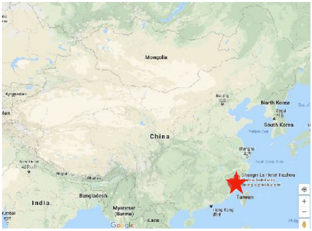

Fujian/Min Cuisine 闽菜 Mǐncài

Fujian/Min Cuisine 闽菜 Mǐncài —Lighter, with a mild sweet and sour taste, using ingredients from the sea and the mountains.
Fujian Cuisine originates from the southeastern province of Fujian on the Pacific. The history of the cuisine dates back 5,000 years. Great seafood soups and the precise use of scintillating, but not tongue numbing, spices are the highlights.